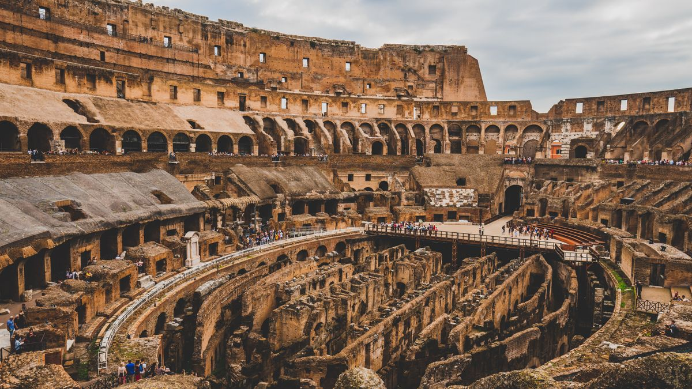

Country Guides
Country GuidesThe Italy student visa from Pakistan is one of the most accessible European study routes for Pakistani applicants, and it is also one of the most misunderstood. Ask a Pakistani family what they know about studying in Italy and you will hear fragments: cheap tuition, beautiful campuses, good food, a "student visa that is easy to get". Some of that is true, some is dangerously incomplete.
Italy is genuinely affordable by European standards, its public universities charge low fees scattered in the few-thousand-euro range, and a growing number of its programmes are taught entirely in English. But the road from Lahore or Karachi to that famous campus runs through a specific, well-documented visa system: the pre-enrolment on the Universitaly portal, the apostilled documents, the accommodation proof, the funds threshold, and the single most common mistake — applying for the wrong intake window and losing a full year.

Is the Italy student visa from Pakistan genuinely worth the effort?
Yes, and the reason is structural rather than promotional. Most Pakistani applicants choose between three or four destinations they already know about, and those destinations are the ones with the longest queues, the highest tuition, or the tightest caps. Italy sits outside that circle. It offers a European degree, a large English-taught catalogue, public-university tuition in the low thousands of euros, and a visa system that decides files on documentation rather than on discretion. For an applicant who is willing to build a clean paper trail, those three advantages compound into a genuinely better risk profile than the crowded alternatives.
What does this 2026 guide cover end to end?
This guide is written for 2026 applicants in Pakistan, and it walks the complete path. You will learn what the Italy student visa requirements actually are for a Pakistani applicant, what the realistic Italy student visa processing time looks like, how the Universitaly pre-enrolment portal fits into the story, exactly how the apostille and legalisation process works from Pakistan, a realistic budget for the cost of studying in Italy for Pakistani students, and where the scholarships for Pakistani students in Italy actually are.
By the end you will be able to explain the whole process to a family member in plain Urdu, and you will know precisely which step every failed Italian application of the last five years has tripped over — and you will hold a complete, printable map of the Italy student visa from Pakistan route.
Why Italy deserves a place at the top of your list
Italy is not the first country a Pakistani student mentions, and that is precisely why it deserves your attention. Germany and Canada are over-subscribed to the point of waiting lists and tightened caps; Italy sits in the very unusual position of offering a European, English-taught, largely public education system that most Pakistani applicants simply never investigate. That undersubscription is your advantage, because it means realistic admission odds, realistic visa budgets, and a pathway that has not yet been gamed by the coaching-centre industry that has turned every other popular destination into an obstacle course.
Why do most Pakistani families never consider Italy?
Because it never made it into the default shortlist. The Pakistani counselling industry has spent twenty years marketing three or four destinations, and the marketing worked: the shortlist is the same in every city, and Italy is not on it. What that means for you is that your competition is thinner than the marketing suggests. A programme that thousands of applicants would chase in the UK can have a manageable applicant pool in Italy, and a university admissions office in Bologna or Turin can be genuinely interested in a strong Pakistani graduate rather than filtering through a queue of identical high scorers.
The second reason is the visa itself. Countries with capped, ranked, or lottery-based systems create a class of winners and a class of disappointed applicants who may not learn their result for months. The Italian route has no lottery, no ranked waiting list, and no provincial admission letter. It has a checklist. That is a quieter advantage than free tuition, but for a family that has watched a sibling lose two years to a German waiting list, it is often the deciding one.
How affordable is the Italy student visa from Pakistan in practice?
The practical strengths stack up in a specific order, and cost comes first. Tuition at Italian public universities is typically EUR 900 to 4,000 per year for international students, dramatically below the UK, Canada, Australia, or the US, and the living cost in the student cities is well below London or Sydney. On top of that, the regional DSU support system can cut the tuition and the housing bill directly for a middle-income applicant, which means the number a Pakistani family actually pays can be lower than the headline band.
Compare that with the destinations that absorb most of the Pakistani student market. A UK undergraduate international tuition runs into the tens of thousands of pounds before rent. Canada charges a high tuition plus a mandatory living expense proof that most families find uncomfortable. Australia adds a visa deposit on top. Italy asks you for a few thousand euros of tuition and a living threshold in the low thousands, and the money you save is the money that stays with your family.
Are enough Italian programmes taught in English for a Pakistani student?
Yes — hundreds of degree programmes across the country run fully in English, covering engineering, computer science, design, fashion, business, and medicine (with the famous IMAT entrance test). The application requires English proficiency that a medium-of-instruction letter or a modest test score satisfies. That last point matters more than it sounds: many Pakistani applicants assume a European English-taught degree means a demanding IELTS gate, and in Italy the requirement is often satisfiable with evidence you already have, particularly if your degree was taught in English.
The practical caveat is that an Italian-taught bachelor's or master's will require Italian or another local language at a higher level, usually B2 or above, and the requirement differs by university. If you are applying straight after an English-medium Pakistani degree, target the English-taught programmes first, then check the language policy page of each university you shortlist rather than assuming.
Can I work while holding an Italy student visa from Pakistan?
Yes, within defined limits. International students can work part-time while studying — commonly up to 20 hours per week during the academic year, with full-time hours permitted during holidays — and the growing post-study work options keep Italy relevant for applicants who later want to stay. For most Pakistani students this is a supplement rather than a plan: it covers weekly living money and gives real work experience plus genuine Italian practice, but it should never be the basis of your visa funds evidence, because the embassy needs to see that you can support the year independently.
The visa system itself, while exacting on documentation, is fundamentally approachable for a well-prepared Pakistani applicant — no province letter, no ranked lottery, no block-account minimums as high as Germany's. Those two advantages together, affordability and workability, are why the destination is starting to appear on the shortlists of families who compare destinations properly rather than by reputation.
What does the Italy student visa from Pakistan actually cover?
There is one more reason Italy stands out, and it deserves a whole paragraph because it shapes every decision below. Italy's visa framework is a documentation system rather than a discretion system. In most of the countries this site covers, success in the visa depends on convincing an officer of your story. In Italy, success depends overwhelmingly on whether you have produced every required paper in the correct sequence and form.
That is excellent news for a prepared applicant — it removes most of the subjective refusal risk — and it is a death sentence for the disorganised one. Every section of this guide is therefore built around the sequence and the papers, in the order the Italian system actually processes them, and it is the reason pursuing an Italy student visa from Pakistan rewards method over hope.
What does an Italy student visa from Pakistan buy a family that no other route offers?
For a Pakistani family the choice of Italy also answers a quieter question that never gets asked in the consulting rooms: whether a European degree is achievable without a lottery, a province letter, or a ranked cap. The Italy student visa from Pakistan route carries none of those gates. What the Italy student visa from Pakistan demands instead — and what this guide supplies — is the organised paper trail that turns an ordinary, honest Pakistani application into an approvable one.
Thousands of Pakistani students study in Italy every year because that paper trail, while exacting, is one a diligent applicant can build alone, and the destination keeps rewarding families who decide to study in Italy for Pakistani students with real admission odds and a budget that stays sane. There is no gatekeeping body, no scarcity auction, and no quota that closes while you sleep. The gate is competence, and competence is something you can build in a calendar year.
The two-stage structure every applicant must internalise first
Before you spend a single rupee, you must understand that an "Italy student visa" is not one thing. It is two separate government processes layered on top of each other, and confusing them is the root cause of almost every rejected Pakistani application. The first layer is the Italy student visa pre-enrolment and admission, run by the universities and the education ministry through the Universitaly portal. The second layer is the long-stay D visa, applied for at the Italian Embassy in Islamabad (with consular processing through the visa application centre in Islamabad), after the pre-enrolment is approved.
What are the two separate processes behind the Italy student visa from Pakistan?
Layer one is academic, run by universities and the education ministry. You apply through Universitaly, the university reviews your file, and you receive an admission decision plus a pre-enrolment confirmation. Nobody at this stage checks your bank balance or your housing. Layer two is consular, run by the Ministry of Foreign Affairs and the embassy. You submit a full dossier — passport, admission papers, accommodation proof, funds evidence, insurance, apostilles, forms, photos, fee — and a visa officer verifies it against a checklist before deciding.
The two layers run on separate clocks, with separate failure modes, and are handled by separate offices. An applicant can be brilliant at layer two and lose everything because of a sloppy Universitaly submission, and another can hold a flawless university offer and fail layer two on a missing apostille. Treating the Italy student visa from Pakistan as one process is why families celebrate an admission letter in March and then discover in June that they never applied for the visa at all.
What is the exact order of steps in the Italy student visa process?
The order is strict and it is the first thing you commit to memory: (1) choose the programme and university, (2) pre-enrol on Universitaly, (3) receive admission and the pre-enrolment confirmation, (4) apply for the type-D student visa at the embassy with your full dossier, (5) enter Italy within the visa's validity, (6) apply for the residence permit (permesso di soggiorno) within eight days of arrival. Miss any step in the sequence and you restart a cycle that takes months.
Because each step depends on the output of the previous one, there is no version of this where you parallelise the process usefully. You cannot apply for the visa before the admission, you cannot show accommodation proof for a university you have not applied to, and you cannot build a convincing funds file without knowing the tuition figure and the city you are heading to. This guide's timeline section sets real deadlines for every step, because the single biggest reason Pakistani applicants lose a year in the Italian process is not document failure — it is starting in the wrong month.
How does the two-stage structure change my budgeting?
There is a second, practical reason to internalise the two-stage structure: it changes your budgeting. The admission stage is cheap, because application fees are small or zero at many universities. The visa stage carries the embassy fees and the funds evidence. And the arrival stage carries the residence-permit costs and the first-year living deposit.
Families who confuse "got into university" with "got the visa" are the ones who book flights too early and discover the gap between the two the expensive way — a gap this guide's money section maps precisely. Concretely, expect to spend almost nothing in stage one, a modest amount on translations, apostilles, and the visa fee in stage two, and then a full year's living costs from stage three onward. Budget the Italy student visa from Pakistan as three separate envelopes rather than one, and the numbers stop looking frightening.
What is the single core truth about the type D visa?
Here is the single sentence that unlocks the entire Italian system for a Pakistani applicant: the Italy student visa for programmes longer than 90 days is a type D long-stay visa, it is visa-free in the sense that there is no Italian cap on Pakistani applicants in most fields, and the visa officer's job is to verify your documents against a checklist, not to decide whether you are a worthy student.
Prepare the checklist perfectly and the officer's decision follows. Skipping one apostille, one translation, or one stamp and the checklist fails you regardless of how strong your university is. That is the single most useful reframe an applicant can carry into this process, because it converts a stressful, subjective-sounding exercise into a countable one. Carry that framing through every section below and the Italian process stops feeling like a lottery.
Why study in Italy for Pakistani students is growing in 2026
A short but important pause to place Italy in the wider 2026 picture, because the trend is moving the Pakistani applicant's way. The decision to study in Italy for Pakistani students has been rising steadily, and the reasons are concrete rather than sentimental: the affordability this guide has quantified, the undersubscription that keeps admission odds realistic, the growing stock of English-taught engineering, design, and business programmes, and a visa framework that rewards a prepared file rather than a lottery draw.
Why is study in Italy for Pakistani students rising in 2026?
Each intake, more Pakistani students discover that Italy answers the question — an affordable European degree with a real student experience — that neither the over-crowded English-speaking universities nor the wholly under-explored options quite address. The drivers are unglamorous but durable: low public tuition, a growing English-taught catalogue, accommodation that is affordable in most cities outside the two most expensive, and a visa process that a diligent applicant can complete without an agent.
To study in Italy for Pakistani students in 2026 is to make a calculated, well-evidenced choice, and the numbers in this guide are the evidence. The trend matters for a second reason: as awareness grows, the undersubscription advantage shrinks. The families currently getting first-refusal consideration from admissions offices, and the ones currently finding student residence with a provisional reservation rather than a scramble, are the ones acting this year rather than next.
How does study in Italy for Pakistani students compare on cost?
The comparison that seals the decision for most families appears when you stack Italy against its neighbours. To study in Italy for Pakistani students costs a fraction of the English-speaking options while keeping a European degree; it is cheaper to live in than many northern European cities; and the English-medium offer keeps growing every year. The tuition band, the monthly living cost, and the funds threshold are all low enough that a middle-income Pakistani household can carry a full year without a second income or a currency gamble.
Should I worry that the Italy student visa from Pakistan route will get crowded?
The reason the coaching industry has not yet flooded the Italy route is simply that it is younger and less commercialised — an advantage that will not last forever. A family that decides, this year, to study in Italy for Pakistani students is choosing the early, ratio-favourable window on a destination that every sign suggests is about to become as crowded as the rest. Act on the advantage while it is still an advantage.
Concretely, that means: apply to the programmes you genuinely want rather than the ones you think will stay easy, do the apostille work early so you are not competing for a late slot, and reserve university accommodation as soon as your admission is confirmed rather than waiting for a visa decision that may be the thing delaying it. The crowding risk is real, but it is a timing problem, and timing is the one variable you control completely.
Meeting the Italy student visa requirements from Pakistan
The formal Italy student visa requirements for a Pakistani applicant in 2026 are best read as a checklist rather than an essay, and the checklist has seven distinct parts. Missing any of them is a ground for refusal or, more common for Pakistani applicants, a delay that forces you to miss your intake.
What are the Italy student visa requirements for a Pakistani applicant?
Before the list itself, note how these Italy student visa requirements are designed: they are a completeness test, not a value judgment. An applicant who meets every documented Italy student visa requirements line — the passport, the admission, the accommodation, the funds, the insurance, and the attested apostilled bundle — has, in practice, satisfied the embassy's central question.
The applicants who trip on the Italy student visa requirements are rarely missing money or merit; they are missing one mechanical entry on the checklist, and the officer cannot exercise the discretion to rescue a file that the system tells him is incomplete. Read them carefully and you will notice none of the Italy student visa requirements demands anything mystical — only a set of provable, dated facts about who you are, where you will stay, and how you will fund the year.
- A valid passport with at least two blank pages and validity covering your full intended stay — and the practical rule is that it should not expire for at least six months beyond your planned return date. Many Pakistani applicants renew passports mid-process; doing so changes your ID number and forces you to re-issue several other documents, so renew early if you are close to expiry.
- Acceptance / pre-enrolment confirmation from an Italian university or recognised institution, evidenced by the admission letter plus the confirmation of your Universitaly pre-enrolment.
- Proof of accommodation in Italy for the study period — a pre-booked student residence, a homestay letter, or a rental agreement. This one trips up more Pakistani applicants than any other single requirement, and the accommodation section below gives it the attention it deserves.
- Proof of funds — enough money to support yourself for a full academic year (typically at least around EUR 6,000–7,000, plus the declared first-year tuition), shown through bank statements, a sponsor letter, and — increasingly — a transportable prepaid or bank card with funds loaded in EUR that some consulates ask you to show.
- Health insurance covering your stay in Italy, either the compulsory private policy or the Italian national health registration after arrival. A private policy valid in Europe for a year is the practical choice for most Pakistani applicants.
- A complete, attested, translated, and apostilled document bundle — your academic certificates, transcripts, and any required language proof, each with an official Italian or English translation and the Hague apostille. This is the part most Pakistani applicants underestimate, and it has its own section below.
- Applicant suitability paperwork — the completed visa application form, passport photos meeting Schengen specifications, the embassy's application fee receipt, and, where asked, a return-ticket itinerary and an explanation of your study plan.
Which two requirements do most Pakistani applicants get wrong?
Read that list once more and mark the two items that most Pakistani applicants either forget or get wrong: accommodation proof and the apostilled document bundle. Everything else in the list is mechanical. Those two are where the Italian process quietly separates the prepared from the unprepared, and this guide devotes two dedicated sections to them.
The reason those two cause most of the trouble is timing. Both need a third party to act — a university residence office, or a university, board, HEC, and Foreign Office chain in Pakistan — and both therefore have long lead times that applicants underestimate. If you leave accommodation proof and apostilles to the last two months, you will be doing them in the same fortnight as the embassy appointment booking, and at that point you no longer have any choice left in the negotiation.
Where do I verify the official requirements and forms?
The visas for Pakistani applicants are processed through the Italian Visa Application Centre in Islamabad and the Italian Embassy in Islamabad, and the single official touchstone is the Italian Ministry of Foreign Affairs visa portal, which carries the current country-specific requirements and the downloadable forms. Always verify your dates against that official source the week you apply, because fee amounts and required-document lists shift.
The coaching centres that sell "guaranteed" Italian visas rarely update their own materials, which means a checklist downloaded eighteen months ago is worse than no checklist at all. Build your dossier from the embassy's own published list, keep a PDF of it dated, and treat any advice that contradicts the official page as suspect. This is the cheapest habit in the entire process and it prevents the most expensive mistakes.
The Universitaly pre-enrolment portal, step by step
The Universitaly pre-enrolment portal is the official Italian government website where every international applicant for an Italian university degree must register and submit their admission request, and it sits at the exact centre of the modern Italian process. The Universitaly platform is not a marketing site; it is the government's own application system, and the phrase "Universitaly" appears on your visa dossier because the embassy wants confirmation that your university application went through the official channel rather than a private agent.
What is the Universitaly pre-enrolment portal and why does it matter so much?
It matters for three reasons. First, it is where your admission actually happens for most Italian degrees, so a university that never sees a Universitaly record may never process you. Second, the pre-enrolment confirmation it produces is a named document in your visa dossier, which means your application path and your visa path share a single official record. Third, it fixes your calendar, because every pre-enrolment window has a published closing date and missing it costs you a full intake cycle.
For a Pakistani applicant the practical habit is to treat the Universitaly record as a live document rather than a form you submit and forget. Log in, save your submission reference, download every confirmation, and keep the PDFs in one folder that you will later copy into your visa dossier. When the consulate asks where your pre-enrolment was lodged, the answer should be a reference number, not a recollection.
What are the five steps on the Universitaly platform?
The flow runs as follows. First, create your account on Universitaly with your personal details and your academic history. Second, search the university and the specific programme, and submit your pre-enrolment application for the intake that interests you. Third, upload the required scanned documents, including academic transcripts, your passport, and any certificates the programme demands, including the language proof and, for medicine or other restricted courses, the relevant entrance-test score.
Fourth, the university reviews your application through the portal and issues its decision — an admission or a rejection — which appears in your Universitaly inbox. Fifth, and critically, at the end of the process the university's decision is registered, and the confirmation of the pre-enrolment becomes one of the key documents in your visa file. The embassy does not want a photocopy of an informal offer e-mail; it wants the system record that your pre-enrolment was lodged through Universitaly.
Does Universitaly itself grant the visa?
There is a recurring misconception that Universitaly itself grants the visa, or that completing the portal application is the same as being admitted. Neither is true. Universitaly is the admission-and-data pipeline; the visa is a separate embassy decision, and a Pakistani applicant can hold a strong Universitaly admission yet still be refused the D visa on accommodation or funds grounds.
The portal is necessary but not sufficient, and every section of this guide that mentions Universitaly does so with that two-stage distinction firmly in view. Treat the Universitaly pre-enrolment record as a piece of proof you will show again on arrival in Italy, because your university will re-confirm your enrolment against the same system during registration. In other words, the same reference number that unlocks the embassy application also unlocks your first-week paperwork in Milan or Bologna, which is a good reason to keep it organised from day one.
How do entrance tests change the Universitaly pre-enrolment picture?
For restricted-access programmes the picture changes slightly. Medicine, dentistry, and veterinary programmes require a national entrance test (for English-medium medicine it is the IMAT), and your score, not your Universitaly submission alone, decides whether the university accepts you. Engineering, computer science, design, business, and the arts do not use national tests, and the university decides on your academic record, your language proof, and your portfolio or motivation statement.
A Pakistani applicant targeting an English-taught MSc in, say, engineering or data science at a public university competes on GPA, English evidence, and fit — and that is a competition an English-medium Pakistani graduate entering 2026 genuinely can win. That is worth emphasising, because the IMAT scares people away from medicine unnecessarily: if your target is engineering, business, or design, the national-test layer does not apply to you at all, and the competition profile is one you already understand from your own degrees.
When should I pre-enrol to protect my October intake?
The single most common Pakistani error in the Italian process is starting too late. The Italian academic year begins in October for most programmes (some begin in February or later), and the pre-enrolment windows on Universitaly are bounded: for the main October intake, international pre-enrolment typically opens in the winter and closes in the spring, with the university decision and the embassy visa application slot following. Because the embassy D-visa appointment itself has its own queue, and because many Pakistani applicants are first-time Schengen travellers who need to prepare apostilles that take weeks at the HEC, the board, the ministry, and the consular office, the folding rule that keeps families safe is: begin the entire process twelve months before your planned arrival, pre-enrol no later than six months out, complete the apostille chain four months out, and apply for the visa appointment the moment the pre-enrolment is confirmed.
Follow that and you have slack; ignore it and you will watch an October admission turn into a January scramble or a lost year. The slack is what lets you absorb a single complication — a rejected university hall room, a delayed apostille, a document query from the embassy — without losing the intake. Applicants who file everything in the same month have no slack at all, and the first unexpected problem becomes a lost year.
The apostille and legalisation pipeline from Pakistan
This is the section most readers will underestimate and most successful Pakistani applicants will recognise as the true engine of the Italian process: the apostille and legalisation of your academic documents. Italy is a member of the Hague Apostille Convention, which means your Pakistani certificates do not need full embassy consular legalisation; instead they need an apostille — the single official stamp that confirms the signature on your document for use in another Hague member country. Getting the apostille right, and in the right order with the right translations, is the difference between an offer that converts and a tuition deposit that never does.
Does Italy need a full embassy legalisation or just an apostille?
Just an apostille, and that is a genuine cost and time saving compared with the consular-legalisation route that some non-Hague destinations still require. Italy accepts the Hague apostille on Pakistani academic documents provided the document has been properly attested up the chain beforehand. The word that trips people up is "apostilled": an apostille is not something you buy, it is something an authorised authority affixes after verifying the signature beneath it.
The truthful framing for a Pakistani applicant is that the apostille and legalisation process is the part that separates the Italian route from every shortcut the coaching centres sell. There is no way to rush apostille and legalisation safely, because each office in the chain verifies the last, and a skipped link surfaces months later at the embassy, exactly when a fix is most expensive. The apostille and legalisation of a Pakistani degree is therefore best treated as a small project with its own deadline, not a single errand.
What is the order of the apostille chain in Pakistan?
The chain for a typical Pakistani applicant runs through at least four offices, and the exact order matters because each office verifies the previous one's work. Start with the university or board that issued your degree and transcript, confirm those originals are accurate copies, and obtain certified copies where the university requires them. Move next to the translation: Italian embassies and universities routinely ask for official Italian translations (or acceptable English translations where the institution allows), completed by a translator who signs the translation, and for some documents the translation must be legalised, sworn, or certified before it can be apostilled.
Then take the originals and the translated versions to the apostille office. The universal rule is that the translation must be in hand before the apostille, because the apostille verifies the signature on the document and on the translation together. An applicant who apostilles first and translates afterwards ends up at the Foreign Office asking them to re-verify a signature that has changed, and that is a two-to-three-week delay they could have avoided entirely.
Which office issues the apostille for my Pakistani degree?
In Pakistan, the authority that issues apostilles depends on the document. For federal-ministry documents and documents from certain issuing bodies, the Ministry of Foreign Affairs in Islamabad provides the apostille. For degrees and transcripts issued by HEC-recognised universities, the standard route is through the Higher Education Commission's attestation followed by the Foreign Office apostille, and for board-issued certificates the same two-step applies.
The precise current procedure and the requirement that your university first verify or attest the document before it reaches the Foreign Office is exactly the kind of detail that changes and that this site's documentation guide keeps current — always confirm the live step against the MOFA's published instructions and the embassy's own country page before you book anything. It is worth phoning the relevant office yourself rather than relying on a blog, because the queue rules, the documentation list, and the fee structure all move, and the people who can confirm today's requirement are the people who will process your file tomorrow.
What are the three rules that keep the pipeline from collapsing?
Three practical rules keep the pipeline from collapsing. First, order two complete sets of apostilled documents — one for the embassy visa file and a spare for the university and the residence-permit process in Italy — because you will be asked for certified copies again in Milan or Turin or Bologna and you cannot re-make a Foreign Office apostille from Lahore. Second, plan the timeline in weeks, not days: HEC attestation plus the Foreign Office apostille plus translation often stretches to three or four weeks, and during peak summer demand it stretches further.
Third, never let an agent hold your originals "for safekeeping"; the original degree and the apostilled copy travel with you, because you will hand them to the university and the police-questionnaire office on arrival in Italy. That last rule deserves emphasis because it is the one most often broken. A cousin's "we'll keep these safe, you can collect before departure" arrangement is how applicants arrive in Italy without a single certified copy of their own qualification, and it cannot be fixed from Karachi. Keep your originals in your own possession at every stage of the Italy student visa from Pakistan process.
Why do apostille problems always surface at the worst moment?
The honest headline is that the apostille pipeline is tedious, but it is not difficult, and it is entirely within the reach of a Pakistani applicant who starts early. Begin the apostille and legalisation work in the very first months of your project, while the university decision is still pending, and you remove the one bottleneck that routinely forces good applicants to miss their intake.
The reason problems cluster at the end is structural: the apostille is the only step that depends on four or five other institutions all agreeing to be open when you need them. University registrar, board, translator, HEC, Foreign Office — each with its own queue and its own counter hours, and none of them aware of your deadline. The applicants who fail are the ones who book a visa appointment first and discover the apostille and legalisation chain afterwards. Reverse the order — papers before appointment — and the pipeline becomes a routine, if unglamorous, errand.
How long the Italy student visa processing time really takes
No planning is complete without an honest number, and the Italy student visa processing time for Pakistani applicants in 2026 sits in a broad but predictable range. From the moment you submit your complete application at the visa application centre in Islamabad, you should expect roughly 4 to 8 weeks of processing before the decision, though individual files run shorter or longer depending on the season, the volume of applications, and whether any document triggers a query.
What is the realistic Italy student visa processing time?
Four to eight weeks for a complete file, filed at the visa application centre in Islamabad, is the realistic band. That is the honest number, and it is the number you should build your flight booking and your accommodation plan around. The temptation in this process is always to plan for the optimistic end of the range, because an October arrival looks comfortable if the visa lands in six weeks. It does not look comfortable in March, when the range turned out to be the long end and your enrolment registration is already being processed without you.
What is the safe planning window for my visa decision?
The Italian system allows up to 90 days for the decision on long-stay visas, so the safe planning assumption — the one that protects your intake — is "assume the maximum, celebrate the minimum": book your arrival expectation around a full 60-day processing window wherever possible. Treat 90 days as the absolute ceiling that exists on paper and 60 days as the number that appears in your calendar, with everything else scheduled around that 60-day figure.
For anyone weighing Italy against the destinations this site covers, the Italy student visa processing time sits comfortably in the middle of the pack — slower than some Asian routes, faster and far less gated than the ranked systems in the exploding English-speaking destinations. A very well-prepared Pakistani applicant who chooses to study in Italy for Pakistani students plans around the published maximum and files early, which is precisely why so many of them hit their intake while the disorganised majority miss it.
Does an agent or an "expedition fee" speed up processing?
No, and this is worth stating plainly because it is a common sales claim. The Italy student visa processing time will not be shortened by a coach or an agent paying "expedition fees"; the wait is set by the seasonal queue and by the completeness of your own file. The decision sits with a consular officer working a queue, and no amount of couriered paperwork moves an officer's diary.
What does shorten it, reliably, is arriving with a file that needs no query. That is a completely free intervention, and it is the one you control. If an agent offers you a faster visa for a premium, ask them instead which single document in your current file is weakest — a competent adviser will point at accommodation proof or an incomplete apostille chain, and that conversation is worth more than the premium.
How does the season affect the wait?
Season is the number-one driver of the real wait. Applications filed in the spring with the September-to-October intake peak are processed in the highest-demand window, when both Universitaly confirmations and embassy appointments cluster, and the practical wait stretches toward the long end of the range. Conversely, an application lodged in the quieter months can sometimes move faster.
The strategic conclusion is the same as the timeline section above: file your visa application the moment your Universitaly pre-enrolment is confirmed, in the earliest window you can control, and never plan your flight or your accommodation deposit around a "promised" two-week visa that the coaching centre invented. If you can compress the gap between your admission and your appointment booking, you are effectively jumping the seasonal queue, because you are entering the process at the point where fewer files are still incomplete.
How much does file completeness change the processing time?
One more factor quietly moves the Italy student visa processing time: the completeness of your file before the officer ever sees it. Files that arrive with the accommodation proof, the funds evidence, the apostilles, and the health insurance already in order are processed on the first pass. Files that arrive with a missing stamp or a translation that has not been certified trigger a request for additional documents, and each round-trip with the embassy resets part of the clock.
The correlation for a Pakistani applicant is direct: the more complete the file, the faster the real Italy student visa processing time, regardless of what the calendar season says. A two-week query can cost you a month, and a month of a 90-day allowance is a month you will spend in Pakistan watching your October intake approach. Completeness is therefore not a formality in this process — it is the single largest controllable input into the number that determines whether you make your enrolment date.
The accommodation proof: the requirement Pakistani applicants ignore
Every country asks for accommodation; Italy is one of the few where a weak or illusory accommodation proof genuinely decides files, and it therefore deserves its own section. The Italian embassy wants to see, in writing and in advance, where you will actually live for the study period — not a screenshot of a hotel booking, not a cousin's promise to "find a room later", and not a scanned lease for a flat in a city you have never visited. The officers have seen every one of those attempts, and they are the classic Pakistani refusal triggers.
Why does accommodation proof carry so much weight in an Italy student visa from Pakistan?
Because it is the embassy's evidence that your stated purpose of stay is real. Every other document in the file describes who you are or what you have done; the accommodation document describes what you intend to do, in a specific place, on specific dates. A purpose-of-stay refusal is the easiest refusal for an officer to write and the hardest for an applicant to argue, and a vague accommodation section is what usually triggers it.
The asymmetry is worth understanding. A weak funds file might be rescued by a clearer bank statement. A weak accommodation file has no rescue, because there is nothing to clarify — either a named, dated, verifiable place exists for your study period, or it does not. That is why this requirement appears in every list of Italian refusal reasons, and why it gets its own section in this guide rather than a line in the checklist.
Which forms of accommodation proof are accepted?
The accepted forms of proof are specific. A written offer from an Italian university residence or student hall, issued on the university's letterhead with your name and the period covered. A registered rental contract for a room or a flat, signed by a landlord with valid Italian identification, showing your name and the lease period. Or a signed, notarised declaration of hospitality from a sponsor in Italy, with all the sponsor's details verified.
Of these three, the university residence offer is by far the easiest for a Pakistani applicant to obtain, because the university's own international office issues it and there is no Italian counterparty you have to find from Karachi. If your university operates student halls, ask them for a provisional reservation letter for your dates as soon as your admission is confirmed. If they are full, the housing office can usually point you to affiliated private halls or a local housing list, and a written offer from one of those still beats a private arrangement you have to argue for.
What should the accommodation document actually say?
In each case the document should state the address, the period, and your name, and it should arrive in English or Italian. A common and acceptable strengthening step is to ask your university's international office to issue a standard accommodation-confirmation letter alongside your admission, because many Pakistani applicants find that a university-hall offer carries more embassy weight than a private lease arranged remotely.
Check four things before you submit it: your name spelled exactly as it appears in your passport, the dates that cover your entire study period rather than just the first month, a full street address and not a neighbourhood, and an issuing party with verifiable contact details. A document that fails any one of those four tests is a document that generates a query, and a query costs you weeks.
What can I do if my university room is not confirmed yet?
The practical message for the Pakistani applicant is to treat accommodation as a real, controlled document rather than an afterthought. If you are not yet certain of the exact university room, you can hold a provisional university-hall reservation for the relevant dates and upgrade it once your visa clears. Many housing offices will hold a place without full payment precisely because they expect visa-dependent students, and that reservation letter is the document the embassy wants to see.
Ask the international office that question directly and in writing: can you issue a provisional accommodation confirmation letter for my pre-enrolment dates while my visa is being processed? A yes, on letterhead, resolves the single most common weak point in a Pakistani Italy student visa from Pakistan file. What you cannot do is leave the question unasked and hope the officer assumes the best.
What must I never write in the accommodation section?
What you cannot do is file an accommodation section that reads as "I will figure it out when I land", because that sentence on a Pakistani visa file is the single clearest signal of unprepared return that the embassy sees, and it is the exact kind of signal that converts an otherwise strong file into a refusal on purpose-of-stay grounds.
The same applies in subtler forms. "Accommodation will be provided by the university" without a letter is a promise, not proof. A cousin's name with no declaration of hospitality attached is a stranger's address. A hotel booking for the first ten days is not accommodation for an academic year. The accommodation proof is effectively your evidence of a genuine plan to live and study in Italy, so build it with the same care as the funds file — because the embassy treats it that way.
What the cost of studying in Italy for Pakistani students really adds up to
Money planning is the section where the Italian story turns friendly, and the honest numbers make the case. The cost of studying in Italy for Pakistani students in 2026 breaks into three layers: tuition, living costs, and upfront visa-and-travel overhead, and across all three Italy is cheaper than the UK, Canada, Australia, or the US by a wide margin.
What three layers make up the cost of studying in Italy for Pakistani students?
Tuition, living costs, and upfront visa-and-travel overhead. It is tempting to add scholarship income as a fourth layer, but treat it as a reduction to the first two rather than a separate budget line, because most DSU and waiver awards arrive after registration when the bills are already due. The table below sets out the realistic range for each layer as a Pakistani applicant should budget it, and the third column contains the practical caveat that the range alone does not tell you.
| Cost layer | Typical range for a Pakistani student | Notes |
|---|---|---|
| Tuition — public university | EUR 900 – 4,000 / year | Based on family income, region, and scholarship status; many international students pay near the low end |
| Tuition — polytechnics / specialised schools | EUR 1,500 – 6,000 / year | Politecnico di Milano and the big business/design schools sit higher |
| Living cost — student cities (Milan, Rome, Bologna top end; Turin, Padua, southern cities lower) | EUR 700 – 1,200 / month | Includes rent, food, transport, phone; Milan and Rome run highest |
| Accommodation share alone | EUR 300 – 600 / month | University residence or shared flat; the largest single expense |
| Health insurance (private, year) | EUR 150 – 350 / year | Private EU-wide policy; public national insurance can supplement after arrival |
| Visa application fee (long-stay D) | roughly EUR 50 – 116 | Set by the consulate; check the current published amount at application time |
| Flight + first-year setup | PKR 120,000 – 220,000 + initial deposit | Depends on city and season; not included in the study-permit thresholds |
What total first-year budget should a Pakistani family actually plan?
The first-year cash figure that a Pakistani family should realistically plan is therefore on the order of EUR 9,000 to 16,000 for a public-university student living in a moderate city, once you add the first-year living costs and the deposit the university and the residence may ask for at registration. That is a meaningful but dramatically smaller number than the equivalent for the English-speaking destinations, and it is the reason Italy keeps attracting cost-conscious Pakistani applicants.
Be careful about which city you price. Milan and Rome sit at the top of the living range and also tend to have the higher-priced private housing, while Turin, Padua, Padua-area towns, and most southern cities sit well below. A family that chooses a mid-sized city can plausibly budget at the lower half of the band, and the difference across a full year is large enough to matter for a middle-income household. The full cross-country budget comparison, including how this number stacks against Germany, the UK, and Malaysia, lives in the study-abroad cost and budget guide.
How does that compare with the UK, Canada and Germany?
Put the cost of studying in Italy for Pakistani students next to the same calculation for the countries this site covers most and the contrast is stark. The cost of studying in Italy for Pakistani students at a public university rests on a low tuition band and a mid-range living bill, whereas the equivalent in the UK or Canada carries tuition that is an order of magnitude higher before living costs even begin. The cost of studying in Italy for Pakistani students is competitive with Malaysia and only moderately above Germany, while offering the European degree that many families specifically want.
When a family asks "what will a year really cost?", the working cost of studying in Italy for Pakistani students is the table in this section, because it separates tuition from the living bill and lets every family budget with its own numbers. That is the number that moves the family conversation from "can we afford it?" to "why did we not look at Italy sooner". Note also what the comparison leaves out: Italy asks for no blocked account, no large upfront deposit held by a third party, and no annual proof of a parental income far above what an average salaried household in Pakistan can show.
How much money must I actually show as proof of funds?
There is one financial rule every Italian applicant must hold: the embassy wants your proof of funds to cover the living costs for the full academic year (the guidance typically asks for around EUR 6,000 to 7,000 as the minimum living threshold, on top of evidence that tuition is covered). Those funds must be yours or your sponsor's, provable through bank statements showing real, consistent balances rather than a sudden injected lump.
The distinction between a real balance and an injected lump is the entire point. An officer reading a statement wants to see a person whose account has behaved like an employed person's account for months: a salary credit each month, fixed debits, a slowly growing balance, and no EUR 300,000 appearing the week before the appointment. A large balance that arrived last Tuesday reads not as wealth but as an attempt, and it invites exactly the scrutiny that costs you a month.
How do you build a credible money file from Pakistan?
The full Pakistani framework for building a credible money file — the three-month statement, the sponsor letter, the income-consistency evidence — is set out in the proof-of-funds guide, and the same discipline applies to Italy. Do not confuse "cheap destination" with "low funds evidence"; Italy is cheap to live in, but the embassy still verifies that you can actually afford the year.
The sequencing also matters. Start accumulating and documenting the balance long before you need it, because a statement that suddenly shows a healthier position in June than in January raises a question you would rather not answer. Ask the visa centre in writing which card or account format it wants to see for the EUR-denominated evidence, because the requirement for a transportable prepaid or bank card with funds loaded in EUR varies by consulate, and it is far easier to arrange in advance than to retrofit three weeks before the appointment.
Can part-time work offset my costs while I study in Italy?
Study costs in Italy are also offset by the work the country permits. International students in Italy may work during their studies under defined limits — commonly up to 20 hours per week during the academic year and full-time during holidays — and the practical detail is covered in this site's part-time jobs guide. For a Pakistani student, the realistic reading is that part-time work in Italy helps cover weekly living money and provides genuine experience (and Italian language practice), but it should never be the basis of your visa funds evidence, because the visa file must show independent support.
What does the post-study work picture look like?
On the post-study side, Italy's position has improved. International graduates can convert their student stay into a work-search or work permit route under defined conditions, and graduates with skills in demand have genuine options to remain and work. These rules evolve, and the current specifics belong to official sources and this site's updated guides rather than to any agent's WhatsApp broadcast.
For applicants whose priority is long-term settlement, the post-study note matters and is a genuine advantage of the destination. For the majority of Pakistani degree-seekers, however, the primary decision is the degree itself, and Italy's visa is a study route first. Decide which of those two you are optimising for before you apply, because a student who wanted settlement all along may choose a different country entirely, and a student who wants the degree should not let an agent inflate the settlement story to justify a higher fee.
The scholarships for Pakistani students in Italy that are actually accessible
The funding picture completes the cost story, and the honest version is good news. A genuinely usable set of scholarships for Pakistani students in Italy exists, and several of them are specifically reachable for a 2026 applicant. What is not helpful is the fantasy version — the "fully funded everything" promise that coaching centres sell. The real landscape is targetable, and here it is.
Which scholarships for Pakistani students in Italy are actually reachable?
Four families of funding, in descending order of usefulness for a typical Pakistani applicant:
- Regional and university DSU scholarships: the Italian regions and universities operate the "Diritto allo Studio" (DSU) system, which awards fee waivers, monthly stipends, and subsidised housing to eligible international students based on income and merit. These are the single most practical funding lever for a Pakistani student because they directly attack the two biggest costs — tuition and accommodation — and many Pakistani applicants over a modest-income threshold genuinely qualify. Check your university's and region's DSU page specifically.
- Merit-based tuition waivers: most Italian public universities and several polytechnics waive tuition partially or fully for eligible international students with strong academic records. Politecnico di Milano and others run named merit programmes that exempt or discount fees.
- Italian Government Scholarships: the Ministry of Foreign Affairs awards scholarships to international students for study in Italy; these are competitive but real, and the current calls sit on the official MAECI pages. The general guidance on building an application that survives a funded-scholarship review lives in the motivation-letter guide and the competitive profile guide.
- University-run international grants: a long tail of departments and schools co-fund international students, and the big business and design schools that charge higher tuition also award larger named scholarships — the cost and the funding move together.
How do I combine a tuition waiver and DSU support into one package?
The strategic reading for a Pakistani applicant is that the most reliable Italian funding is the combination of a low public tuition (which the system itself delivers) and the DSU regional support (which targets exactly the income profile most Pakistani families present). A student who gets a partial tuition waiver and a DSU-supported room can study in a European public university for a genuinely small net cost, and the how-to-find-scholarships guide on this site walks through the exact matching method to tune that combination to your own profile.
No single "fully funded Italy" prize is waiting, but a stackable, realistic package absolutely is. The practical order is to apply for the DSU first, because it targets your family income rather than your grades, then layer a merit waiver on top, and only then consider a government scholarship as a stretch application. Applicants who only ever chase the most prestigious award end up with nothing, while applicants who treat funding as a stack end up with a workable bill.
What three timelines should I watch for Italian funding?
Hold one more funding fact in mind before you move on: the scholarships for Pakistani students in Italy are not a single fixed pot you "apply to once"; they are a rolling system of regional, university, and national lines that reopen on their own calendars. A 2026 applicant who watches three timelines — the DSU regional call, the university's own waiver notice, and the government scholarship announcement — will almost always find more money than a student who applied to one named scholarship once and gave up.
The scholarships for Pakistani students in Italy also reward an exact-fit method: read each call's country and income criteria, confirm Pakistan appears in the eligible list, and prepare the language and motivation documents each line wants. The applicants who treat the scholarships for Pakistani students in Italy as a schedule rather than a lottery are the ones who study on real funding instead of a dream, and the scholarships for Pakistani students in Italy page you should bookmark first is your university's own DSU notice, because that is where the majority of real money actually lives.
Step-by-step: the complete Italian visa timeline from Pakistan
With the pieces in place, the timeline below turns the theory into a schedule a Pakistani family can follow to protect a September-October 2026 intake. It is deliberately conservative, because every deadline in this gate-driven system rewards slack.
When should I start the Italy student visa process for an October intake?
Twelve months out, ideally in the autumn of the year before you travel, because the apostille chain alone can consume three or four weeks of that year and the Universitaly window closes in the spring. The table below breaks the twelve months into windows, each with a specific action, so you can print it and work down it rather than trying to hold the whole plan in your head. Every row assumes you are targeting the main October intake; if you are targeting the February intake, shift the whole schedule back by roughly four months rather than compressing it.
| Months before arrival | Action |
|---|---|
| 12 – 10 | Shortlist programmes and universities; verify English-medium availability and language/academic requirements; confirm your English-medium (or test) evidence covers them. |
| 10 – 8 | Start the certificate chain: request transcripts and degree copies, begin HEC/board verification, arrange official translations, and start the apostille sequence so it is finished before university decisions are due. |
| 8 – 6 | Complete the Universitaly pre-enrolment for your target programmes within the published window; upload documents and any entrance-test score (IMAT for medicine). |
| 6 – 5 | Receive university decisions through Universitaly; confirm your chosen admission; secure a provisional university residence or rent proof; evidence the funds threshold with clean bank statements and a sponsor letter. |
| 5 – 4 | Apply for the D-student visa appointment at the visa application centre in Islamabad as soon as the pre-enrolment confirmation is in hand; assemble the complete dossier (accommodation, funds, insurance, apostilles, forms, photos, fee receipt). |
| 4 – 1 | Attend the appointment, provide biometrics, respond to any document request the same day, and track processing during the realistic 4–8 week window. |
| 1 – 0 | Collect the visa, book the flight inside its validity (typically 90 days or the number of days stated), and prepare the arrival kit for the residence permit. |
| 0 (arrival) | Enter Italy, obtain the codice fiscale, and file the residence permit (permesso di soggiorno) application within eight days of arrival; then complete university registration. |
What is the single lesson of the timeline?
The lesson of the timeline is compressed into one line: start a full year out, finish your papers before your decision is due, and you will never be in a position where an apostille or an appointment queue decides your intake. The applicants who start in May for an October arrival are, almost without exception, the ones writing desperate WhatsApp messages in July.
Notice what the schedule puts first. Paperwork, not applications. The certificate chain starts two months before the Universitaly pre-enrolment closes, because the university does not need your apostilles to decide — but the embassy does need them four months after you land, and by July it is too late to begin. Reverse the order and the calendar stops being a source of anxiety and becomes a checklist, which is the whole point of the Italy student visa from Pakistan route.
Common reasons Pakistani Italy student visa applications fail
Honesty about failure is the fastest route to success, and every pattern below is drawn from the actual Pakistani files that this site's readers and counsellors see processed. Treat them as the checklist of what not to do.
Why do Pakistani Italy student visa applications fail most often?
Six patterns account for the overwhelming majority of refusals and delays on Pakistani files, and all six are visible in advance if you know to look for them:
- The accommodation hole. Filing without a real, written, name-specific accommodation proof — the refusal ground that removes the largest share of Pakistani Italy files. Fix it with a university reservation or a registered lease.
- The funds bluff. A bank statement that shows a sudden six-figure rupee injection with no income trail, or a "sponsor" whose own statement does not match the letter. The embassy reads consistency, and the proof-of-funds guide shows how to build the file the right way.
- The apostille shortcut. Submitting unawarded, untranslated, or machine-copied certificates. The apostille and the certified translation are not optional cosmetics; they are the verification layer the officer checks first because they are the layer most applicants fake.
- The wrong intake / missed window. Pre-enrolling after the Universitaly deadline, then arriving unable to start in October and losing the year. This single mistake quietly kills more Italy student visa from Pakistan applications than any other step; the calendar is the system, so respect it.
- The loose end in identity. A passport that renews mid-process and invalidates the other documents, or a name that appears differently across the apostilled papers and the passport. Every document must match the passport exactly.
- The unverifiable sponsor. A sponsor in Italy whose declaration cannot be checked because the details are incomplete or fabricated. Sponsorship must be real, documentable, and consistent with the accommodation proof.
Is there a single theme behind every refusal?
The unifying theme is that the Italian process punishes incompleteness, never enthusiasm. Every one of those failures is a missing paper or a mismatched detail, and every one of them is preventable with the checklist-first method this guide has laid out.
That is why, unlike the more discretionary systems this site covers — where the refusal reasons can involve a genuinely subjective officer judgment — the Italian failure list is dominated by paperwork that a prepared applicant simply does not make. Read the six patterns again with that in mind and you will notice something reassuring: not one of them is about whether you were a good enough student or whether Italy wanted you. Every one is about whether the file was finished, consistent, and provable. That is a problem you can solve with a calendar and a checklist, which is the best kind of problem to have in a visa process.
Bad agents, good agents, and where to put your money
No Italy guide from Pakistan is complete without the agent warning, because the coaching-and-agent industry in Pakistan has discovered Italy, and its marketing has arrived a decade after its substance. A small number of genuinely competent agencies help Pakistani students through the Universitaly and visa paperwork honestly. A much larger number sell fantasy: "guaranteed Italian visa", "fully an internship placement", "we manage everything including your apostilles", for fees that run into six figures of rupees while they submit a dossier the applicant could have assembled with a checklist and three weeks of effort.
Should I use an agent for my Italy student visa from Pakistan at all?
Use one only if you genuinely cannot do the work yourself, and even then only for the parts you cannot. The dossier for this visa is a matter of assembling documents, not of specialist judgement — there is no legal skill required, no negotiation, and no secret relationship with the consulate. Everything the agent does with your papers, you can do season by season with the official portals this guide has linked, and the post-award visa guide on this site lays out the same papers-first method that keeps an applicant in control of their own file.
There are two situations where an agent adds genuine value. The first is a genuinely complicated family financial picture, where a sponsor's documentation needs professional assembly into something the consulate recognises. The second is a case where the applicant is applying from outside Pakistan and cannot physically attend the biometric appointment or the HEC counters. Outside those two, the fee is paying for convenience you already have, and convenience is not worth a six-figure rupee amount in this process.
What three questions separate a good Italy agent from a bad one?
The test of an honest Italy agent is specific and cheap. Ask them three questions and judge their answers. One: can you name the current Universitaly intake deadline and the official Ministry of Foreign Affairs URL, unprompted? Two: will you show me the exact Embassy of Italy to Pakistan country page and let me phone the visa application centre myself before I pay? Three: is the apostille performed by the Ministry of Foreign Affairs Islamabad myself, or do you handle only the translation and courier?
An honest agent answers all three plainly and lets you verify against official sources; a bad agent deflects, insists on upfront full payment, and moves quickly to "package deals". Notice that none of the three questions asks them to promise you an outcome — the entire test is whether they are willing to be checked. An agent who is comfortable being verified by you at zero cost is telling you something real about the file they will submit, and an agent who objects to a phone call to the visa centre is telling you something equally real.
Where should I put my money if I use a service at all?
If you do use one, put the money into preparation rather than representation. A paid translator who produces properly certified translations, or a paid courier who physically moves your documents between the HEC, the board, and the Foreign Office, is buying back your time on the step where time actually costs you an intake. That is a defensible expense. A retainer paid to someone who files your forms for you is not, because the forms are the part you can do in an evening.
The uncomfortable truth about this destination is that the bottleneck was never knowledge. The information is free, published by the government, and available in English. What Pakistani applicants pay for is a shortcut past a wait, and no agent can compress a consular queue. The applicants who succeed on this route are the ones who paid for a certified translation and a courier and then did the rest themselves, which is not an insult to the agents who help honestly — it is a description of the ones who do.
Arriving in Italy: the first things you must do
The visa is the gate, not the end, and the first weeks in Italy carry their own mandatory paperwork that a Pakistani applicant must not skip. The single highest-stakes arrival task is the residence permit.
What must I do in the first eight days after arriving in Italy?
You must apply for the permesso di soggiorno within eight days of entering the country through the official procedure (today, the kit at the post office or the digital procedure at your questura), and you must do it on schedule because your rent, your university registration, and your eligibility to open a bank account and (later) to work all depend on it. Eight days is short enough that families miss it while they are still finding a flat, so treat the deadline as a task for your second day in the country rather than your eighth.
The kit you will need is essentially the dossier you already built: your passport and visa, your admission and pre-enrolment confirmation, your accommodation evidence, your apostilled academic documents, your passport photos, and proof of the fee. That is why the embassy stage is worth doing carefully — the arrival stage reuses the same papers, and an applicant who kept everything organised finds the questura appointment almost mechanical.
What is the codice fiscale and why do I need it immediately?
Alongside the permit, obtain your codice fiscale — the Italian tax number — because you need it for almost every official transaction, and register with the local health service or rely on your private policy until that registration completes. In practice that means university registration, the lease, the bank account, the phone contract, and any scholarship payment will all ask for it, and having it on day one removes a recurring small delay from your first month.
It is free to obtain, and the process is straightforward, but it is one of those administrative steps that applicants treat as administrative until the day they need a bank account and discover they cannot open one. Treat the codice fiscale as a first-week deliverable alongside the residence permit rather than as something to sort out "after the paperwork settles".
What sequence should I protect after landing?
There is a sequence to protect: entry, residence permit, registration, then classes. Pakistani applicants who treat the arrival paperwork as optional are the ones who hit a wall in month six when they try to renew or convert status and find their stay was never fully regularised. Italy rewards the same documentation discipline on arrival as it demanded on departure — a continuity that should come as no surprise to anyone who has read this guide to this point.
There is a practical reason for this order that goes beyond compliance. Your university cannot complete your enrolment without your residence documentation, and you cannot complete your enrolment while simultaneously handling a housing emergency, so the first month is better spent on the residence permit and the codice fiscale than on finding the cheapest possible room. Secure a university hall place or a short legitimate stay first, regularise your status, and then optimise your housing. Doing it the other way round is how students end up with a rent they cannot afford and a status they cannot prove.
Italy Student Visa from Pakistan: D-Class Guide: what this guide covers
This guide explains everything a Pakistani student needs to know about Italy student visa from Pakistan, including eligibility, costs, timelines and practical steps. Use the sections above to find the exact information you need, or bookmark this page and return as your application progresses.
Which section should I read first if I am only starting now?
Read this one, then the requirements section, then the timeline. Those three will tell you whether the route fits your situation, exactly what the dossier must contain, and when each item must happen. Everything after that — Universitaly, apostilles, accommodation, money, funding, refusals — is depth you can read in the order you need it as your application advances.
If you are already mid-process, the two sections that repay attention first are the apostille pipeline and the accommodation proof, because those are the two items where a delay translates directly into a lost intake. If you are still deciding, the cost section and the funding section will give you the numbers to take to a family discussion. This page is designed to be read in pieces rather than in one sitting, and the structure above reflects how the process actually unfolds over a calendar year.
Final thoughts: the five-number summary of studying in Italy
Compress the entire Italian process into the numbers that matter and a Pakistani family can hold them in one hand:
Which five numbers should a Pakistani family remember?
- 2 — the two processes (Universitaly admission + embassy D visa) you must never conflate.
- EUR 900–4,000 — the realistic public tuition band for a year.
- EUR 700–1,200 — the monthly living cost in the student cities.
- EUR 6,000–7,000 — the funds threshold you must evidence for the year, beyond tuition.
- 4–8 weeks — the realistic Italy student visa processing time once your complete file is in.
These five numbers are worth learning properly, because they answer most of the questions a family will ask in the first ten minutes of any conversation about studying abroad. "How much is tuition?" "What is it like to live there?" "Will they believe we can pay?" "How long does it take?" — all four have a number attached, and all four numbers are far more encouraging than the equivalent figures for the destinations most Pakistani families discuss by default.
What is the five-sentence summary I can explain to my family?
Italy is a real, affordable, English-taught European option that most Pakistani applicants never investigate, which is exactly why it rewards the ones who do. The whole system runs on documentation rather than discretion, so a prepared file converts; an incomplete one fails regardless of the university. Start a full year out, finish the apostille and accommodation and funds proofs before your decision is due, and apply for the visa the moment Universitaly confirms you. The money file must be real and consistent, and the funding you should actually target is the university-regional DSU system that attacks tuition and housing directly. And above all, never let an agent hold your originals or promise a guaranteed visa — the system is checkable by you, on official pages, at zero cost.
What is the biggest single reason to act on Italy this year?
Undersubscription, and it is the one advantage that disappears without warning. Every signal suggests that the coaching industry, the agents, and the social media shortlists are about to arrive in force, and when they do, the applicant who applied quietly in the last low-competition window will find the halls full, the intakes tighter, and the visa queue longer. The Italy student visa from Pakistan route does not become harder because Italian universities get better — it becomes harder because more Pakistani applicants are competing for the same places.
That is the complete, honest map of the Italy student visa from Pakistan in 2026. The reward for the discipline this guide demands is a European degree at a fraction of the usual cost, in a country whose admissions are genuinely within reach for a well-prepared Pakistani applicant — and an application built so cleanly that the embassy's own officers will recognise it as the reliable file it is the moment they open it. Nothing here requires a shortcut, a guarantor, or a lucky month. It requires a checklist, a calendar, and starting earlier than feels necessary. That is a low bar, and most of the applicants who clear it are pleasantly surprised by how straightforward the rest turns out to be.